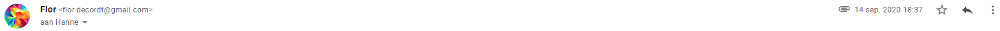

Geachte heer/mevrouw
Mijn naam is Flor De Cordt. Ik zit in het vijfde jaar en volg de richting IT en Netwerken. Deze studie volg ik
aan
het Immaculata Secundair te Oostmalle. In het kader van mijn geïntegreerde proef zou het fijn zijn mocht ik
mijn
stage bij jullie kunnen komen doen. De stage zou doorgaan van 19 tot en met 23 oktober 2020. O.w.v. wetgeving
en
verzekering mag ik geen taken bij jullie uitvoeren maar zou het gaan om een observatiestage.
Graag zou ik bij jullie stage lopen omdat ik graag zou willen weten wat er zoal gebeurt op vlak van IT bij
jullie
en hier dan ook zoveel mogelijk uit leren. Voor mijn geïntegreerde proef is het de bedoeling dat ik ook
opdrachten
maak i.v.m servers, etc. het zou heel leuk zijn wat meer te weten te komen over hoe jullie deze gebruiken.
Op school heb ik al veel geleerd over de werking van servers en databases dus ik zou graag deze theorie ook
eens
in praktijk willen zien. Ook ben ik zeer geïnteresseerd naar hoe al de IT-componenten bij jullie vlot met
elkaar
kunnen communiceren. Ik ben tevens een zeer gemotiveerde jongen die graag iets bijleert over allerhande
onderwerpen.
Indien jullie geïnteresseerd zouden zijn mogen jullie altijd contact opnemen met mij zodat we z.s.m. een datum
kunnen vinden voor een eerste kennismakingsgesprek!
Ik kijk uit naar jullie reactie! Mochten jullie nog vragen hebben, beantwoord ik deze graag!
Met vriendelijke groeten
Flor De Cordt
Vonderstraat 24
2310 RIJKEVORSEL
flor.decordt@gmail.com
Beste Flor,
Bedankt voor je interesse in een stage bij Groep Van Roey. We zijn zeker bereid om jou een weekje te laten
meelopen op onze IT afdeling.
Een kennismakend gesprek is zeker een goed idee. Bezorg me misschien even jouw beschikbaarheden op basis van
je
lesrooster, en dan plannen we iets in. Ikzelf werk niet op woensdag, dus bij voorkeur een andere dag.
Graag tot snel.
Met vriendelijke groeten
Hanne Claus
HR medewerker
hanne.claus@vanroey.pro
T +32 3 340 17 15
M +32 497 55 06 62
Beste mevr. Claus
Bedankt voor uw reactie. Op maandag kan ik vanaf 15h15, op dinsdag vanaf 14h15 en op donderdag, vrijdag
vanaf
16h15.
Laat maar weten wanneer het voor u het best past.
Met Vriendelijke Groeten
Flor De Cordt
Beste Flor,
Graag plannen we een korte kennismaking in op 21 sept. om 3:30, op ons kantoor in Rijkevorsel
(Oostmalsesteenweg
261).
Als je extra documentatie hebt over de stage, mag je die altijd al bezorgen of eventueel meepakken.
Tot dan.
Hanne Claus
HR medewerker
hanne.claus@vanroey.pro
T +32 3 340 17 15
M +32 497 55 06 62

Beste mevr. Claus
Dit past perfect voor mij. Alvast bedankt en tot dan.
Met vriendelijke groeten
Flor De Cordt